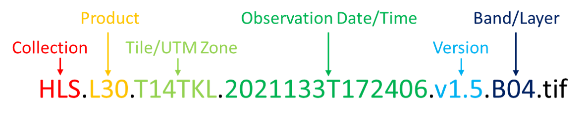

02. Data Discovery with CMR-STAC API
Timing
- Exercise: 30 min
Summary
In this example we will access the NASA’s Harmonized Landsat Sentinel-2 (HLS) version 2 assets, which are archived in cloud optimized geoTIFF (COG) format in the LP DAAC Cumulus cloud space. The COGs can be used like any other geoTIFF file, but have some added features that make them more efficient within the cloud data access paradigm. These features include: overviews and internal tiling. Below we will demonstrate how to leverage these features.
But first, what is STAC?
SpatioTemporal Asset Catalog (STAC) is a specification that provides a common language for interpreting geospatial information in order to standardize indexing and discovering data.
The STAC specification is made up of a collection of related, yet independent specifications that when used together provide search and discovery capabilities for remote assets.
Four STAC Specifications
STAC Catalog (aka DAAC Archive)
STAC Collection (aka Data Product)
STAC Item (aka Granule)
STAC API
In the following sections, we will explore each of STAC element using NASA’s Common Metadata Repository (CMR) STAC application programming interface (API), or CMR-STAC API for short.
CMR-STAC API
The CMR-STAC API is NASA’s implementation of the STAC API specification for all NASA data holdings within EOSDIS. The current implementation does not allow for querries accross the entire NASA catalog. Users must execute searches within provider catalogs (e.g., LPCLOUD) to find the STAC Items they are searching for. All the providers can be found at the CMR-STAC endpoint here: https://cmr.earthdata.nasa.gov/stac/.
In this exercise, we will query the LPCLOUD provider to identify STAC Items from the Harmonized Landsat Sentinel-2 (HLS) collection that fall within our region of interest (ROI) and within our specified time range.
What you will learn from this tutorial
- how to connect to NASA CMR-STAC API using Python’s
pystac-client
- how to navigate CMR-STAC records
- how to read in a geojson file using
geopandasto specify your region of interest - how to use the CMR-STAC API to search for data
- how to perform post-search filtering of CMR-STAC API search result in Python
- how to extract and save data access URLs for geospatial assets
This exercise can be found in the 2021 Cloud Hackathon Book
Import Required Packages
#Explored available NASA Providers
#Connect to the CMR-STAC API
#We’ll create a providers variable so we can take a deeper look into available data providers - subcategories are referred to as “children”. We can then print them as a for loop.
#Connect to the LPCLOUD Provider/STAC Catalog
For this next step we need the provider title (e.g., LPCLOUD) from above. We will add the provider to the end of the CMR-STAC API URL (i.e., https://cmr.earthdata.nasa.gov/stac/) to connect to the LPCLOUD STAC Catalog.
#Since we are using a dedicated client (i.e., pystac-client.Client) to connect to our STAC Provider Catalog, we will have access to some useful internal methods and functions (e.g., get_children() or get_all_items()) we can use to get information from these objects.
List STAC Collections
We’ll create a products variable to view deeper in the STAC Catalog.
#Print one of the STAC Collection records
To view the products variable we just created, let’s look at one entry as a dictionary.
#Print the STAC Collection ids with their title
In the above output, id and title are two elements of interest that we can print for all products using a for loop.
#Search for Granules/STAC Items - Set up query parameters to submit to the CMR-STAC API
We will define our ROI using a geojson file containing a small polygon feature in western Nebraska, USA. The geojson file is found in the ~/data directory. We’ll also specify the data collections and a time range for our example.
Read in a geojson file
Reading in a geojson file with geopandas will return the geometry of our polygon (our ROI).
NOTE: If you are running the notebook from the tutorials-templates directory, please use the following path to connect to the geojson file: “../tutorials/data/ne_w_agfields.geojson”
#Visualize contents of geojson file
We can use that geometry to visualize the polygon: here, a square. But wait for it –
#We can plot the polygon using the geoviews package that we imported as gv with ‘bokeh’ and ‘matplotlib’ extensions. The following has reasonable width, height, color, and line widths to view our polygon when it is overlayed on a base tile map.
#We will now start to specify the search criteria we are interested in, i.e, the date range, the ROI, and the data collections, that we will pass to the STAC API.
Extract the coordinates for the ROI
#So, what just happen there? Let’s take a quick detour to break it down.
Specify date range
Next up is to specify our date range using ISO_8601 date formatting.
#Specify the STAC Collections
STAC Collection is synonomous with what we usually consider a NASA data product. Desired STAC Collections are submitted to the search API as a list containing the collection id. We can use the ids that we printed from our products for loop above. Let’s focus on S30 and L30 collections.
#Search the CMR-STAC API with our search criteria
Now we can put all our search criteria together using catalog.search from the pystac_client package.
#Print out how many STAC Items match our search query
#We now have a search object containing the STAC Items that matched our query. Now, let’s pull out all of the STAC Items (as a PySTAC ItemCollection object) and explore the contents (i.e., the STAC Items)
#Let’s list some of the Items from our pystac item_collection:
#We can view a single Item as a dictionary, as we did above with STAC Collections/products.
#Filtering STAC Items
While the CMR-STAC API is a powerful search and discovery utility, it is still maturing and currently does not have the full gamut of filtering capabilities that the STAC API specification allows for. Hence, additional filtering is required if we want to filter by a property, for example cloud cover. Below we will loop through and filter the item_collection by a specified cloud cover as well as extract the band we’d need to do an Enhanced Vegetation Index (EVI) calculation for a future analysis.
We’ll make a cloudcover variable where we will set the maximum allowable cloud cover and extract the band links for those Items that match or are less than the max cloud cover.
#We will also specify the STAC Assets (i.e., bands/layers) of interest for both the S30 and L30 collections (also in our collections variable above).
In this hypothetical workflow, we’ll extract the bands needed to calculate an enhanced vegetation index (EVI). Thus, the band needed include red, near infrared (NIR), and blue. We’ll also extract a quality band (i.e., Fmask) that we’d eventually use to perform per-pixel quality filtering.
Notice that the band ids are in some case not one-to-one between the S30 and the L30 product. This is evident in the NIR band for each product where S30’s NIR band id is B8A and L30’s is B05. Note, the S30 product has an additional NIR band with a band id of B08, but the spectral ranges between B8A and B05 are more closely aligned. Visit the HLS Overview page to learn more about HLS spectral bands.
#And now to loop through and filter the item_collection by cloud cover and bands:
#The filtering done in the previous steps produces a list of links to STAC Assets. Let’s print out the first ten links.
#NOTE that HLS data is mapped to the Universal Transverse Mercator (UTM) projection and is tiled using the Sentinel-2 Military Grid Reference System (MGRS) UTM grid. Notice that in the list of links we have multiple tiles, i.e. T14TKL & T13TGF, that intersect with our region of interest. In this case, these two tiles represent neighboring UTM zones. The tiles can be discern from the file name, which is the last element in a link (far right) following the last forward slash (/) - e.g., HLS.L30.T14TKL.2021133T172406.v1.5.B04.tif. The figure below explains where to find the tile/UTM zone from the file name.

We will now split the list of links into separate logical sub-lists.
Split Data Links List into Logical Groupings
We have a list of links to data assets that meet our search and filtering criteria. Below we’ll split our list from above into lists first by tile/UTM zone and then further by individual bands bands. The commands that follow will do the splitting with python routines.
Split by UTM tile specified in the file name (e.g., T14TKL & T13TGF)
##Print dictionary keys and values, i.e. the data links
##Now we will create a separate list of data links for each tile
#Print band/layer links for HLS tile T13TGF
#Split the links by band
####Save links to a text file
To complete this exercise, we will save the individual link lists as separate text files with descriptive names.
NOTE: If you are running the notebook from the tutorials-templates directory, please use the following path to write to the data directory: “../tutorials/data/{name}”
Write links from CMR-STAC API to a file
#Write links to file for S3 access
#